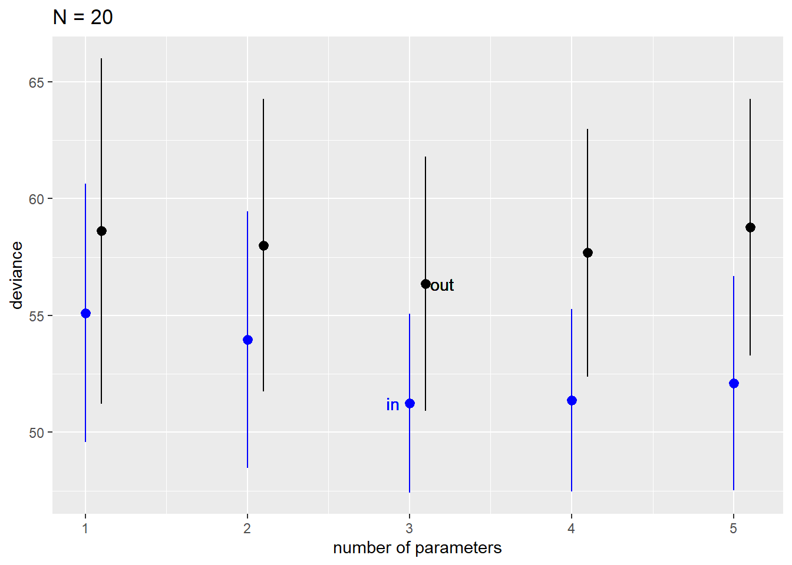
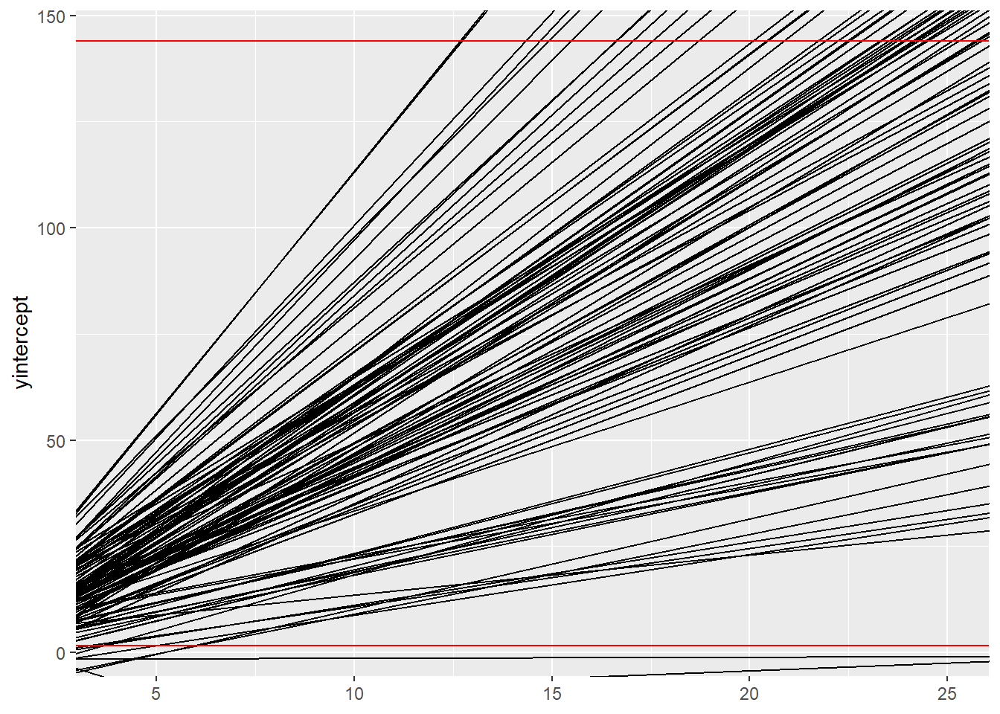
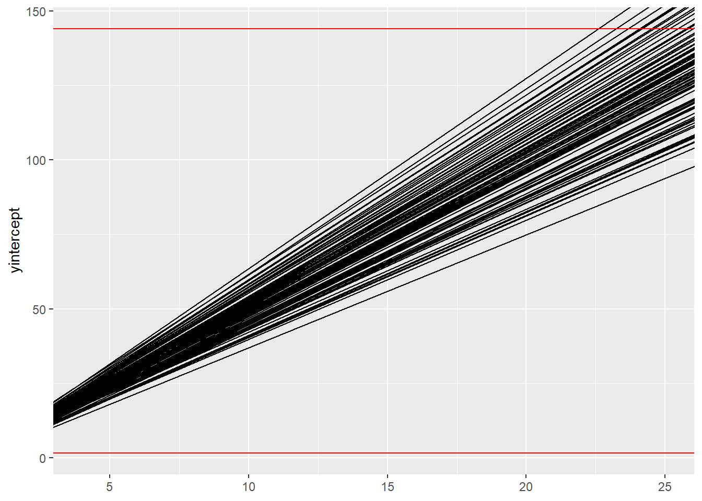
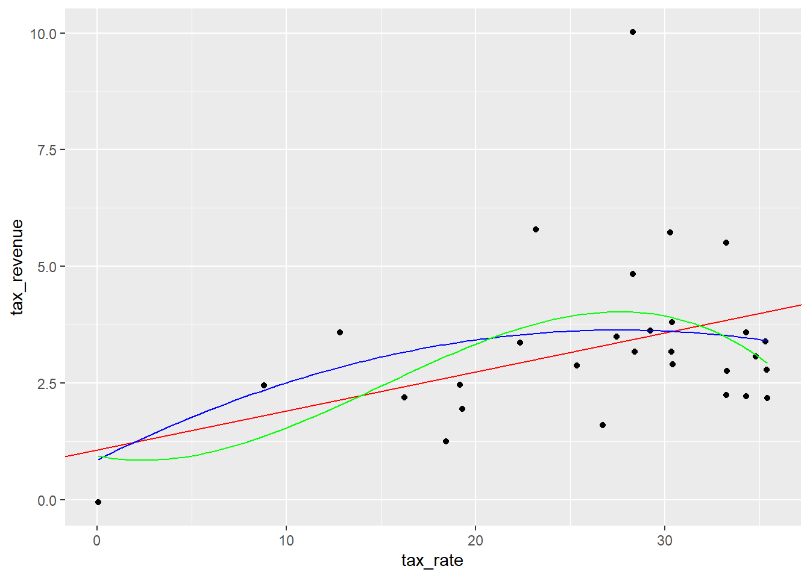

Chapter 7 Ulysses’ Compass
7.1 Chapter Notes
Brain Volume model
We fit the linear brain volume model since it is used to illustrate various concepts later in the chapter:
set.seed(100)
m7.1 <- quap( alist(
brain_std ~ dnorm( mu , exp(log_sigma) ),
mu <- a + b*mass_std,
a ~ dnorm( 0.5 , 1 ),
b ~ dnorm( 0 , 10 ),
log_sigma ~ dnorm( 0 , 1 )
), data=brain_volume )Log Pointwise Predictive Density
Computing the log pointwise predictive density. With data \(y = \{y_i\}\) and posterior distribution \(\Theta\):
\[ \text{lppd}(y,\Theta) = \sum_i \log \left( \frac{1}{S}\sum_s p(y_i | \theta_s) \right) \] Where \(S\) is the number of samples and each \(\theta_s\) is a sample from \(\Theta\).
For an observation say \(y_1\), you calculate the average probability of seeing this observation given the posterior (i.e. you sum the conditional probabilities of the observation over each posterior sample, and divide by the number of samples). You repeat this process for each observation \(y_i\), take the log of each and sum them all together.
Here is the calculation done in R, from the “Overthinking: Computing the lppd” box:
set.seed(1)
# Using the lppd function built into the Rethinking package
lppd1 <- lppd( m7.1 , n=1e4 )
# Extracting posterior samples and calculating manually
logprob <- sim( m7.1 , ll=TRUE , n=1e4 ) # logprob contains 10,000 samples from the posterior distribution, each estimating the (log) probability of seeing each
# of the seven observations.
n <- ncol(logprob)
ns <- nrow(logprob)
average_post_prob <- function( i ) {
log_sum_exp( logprob[,i] ) - log(ns)} # this functions sums the log probabilities of the 10,000 samples and divides by the number of rows
# except it is working on a log probability scale.
lppd2 <- sapply( 1:n , average_post_prob ) # the function is applied to each of the seven observations
lppd1## [1] 0.6099135 0.6484063 0.5496868 0.6235310 0.4648179 0.4347736 -0.8444470lppd2## [1] 0.6117253 0.6488831 0.5448708 0.6278331 0.4638980 0.4263233 -0.8522201Summing over these seven observations will give the total lppd.
Simulating in and out of sample deviance for varying parameter numbers
The idea here is to simulate from the following model with two parameters:
\[\begin{aligned} y_i & \sim \text{Normal}(\mu_i,1) \\ \mu_i &= (0.15)x_{1,i} - (0.4)x_{2,i} \end{aligned}\]
To the data produced, we try to fit linear regressions with between 1 and 5 parameters, and compare the in and out of sample deviance for these five models.
N <- 20
kseq <- 1:5
# sim_train_test simulates Gaussian data with N cases and fits a model with k parameters, returning the in sample and out of sample lppd (can also do WAIC criteria)
# dev contains the mean in sample deviance, mean out of sample deviance, sd of in sample deviance, and sd of out of sample deviance for each model with 1-5 parameters.
dev <- map_dfr( kseq , function(k) {
r <- replicate( 100 , sim_train_test( N=N, k=k , cv.cores = 4));
tibble(mean_in = mean(r[1,]) ,mean_out= mean(r[2,]) ,sd_in= sd(r[1,]) ,sd_out= sd(r[2,]) )
} )
ggplot(data=dev)+
geom_pointrange(aes(x=1:5,y=mean_in,ymin=mean_in-sd_in,ymax=mean_in+sd_in), colour = "blue")+
geom_pointrange(aes(x=1.1:5.1,y=mean_out,ymin=mean_out-sd_out,ymax=mean_out+sd_out))+
geom_text(aes(x=2.9, y = mean_in[3], label="in"),colour="blue")+
geom_text(aes(x=3.2, y = mean_out[3], label="out"))+
xlab("number of parameters")+
ylab("deviance")+
ggtitle("N = 20")
Overthinking: WAIC calculations.
The formula for WAIC is:
\[ \text{WAIC}(y,\Theta) = -2 \left( \text{lppd} - \sum_i \text{var}_\theta ( \log p(y_i | \theta)) \right) \]
where \(\text{var}_\theta\) means taking the variance over the set of posterior samples.
The book calculates it for a simple model:
# fit a linear model of stopping distance & speed
data(cars)
set.seed(100)
m <- quap( alist(
dist ~ dnorm(mu,sigma),
mu <- a + b*speed,
a ~ dnorm(0,100),
b ~ dnorm(0,10),
sigma ~ dexp(1)
) , data=cars )
set.seed(94)
cars_post <- extract.samples(m,n=1000)
# calculate (log) probability of seeing data in cars, assuming it comes from a normal distribution with mean and sd taken from the posterior samples. There are 1000 samples so logprob contains 1000 columns. There are 50 observations in cars so logprob has 50 rows.
n_samples <- 1000
cars_logprob <- sapply( 1:n_samples , function(s) {
mu <- cars_post$a[s] + cars_post$b[s]*cars$speed
dnorm( cars$dist , mu , cars_post$sigma[s] , log=TRUE )
} )
# we take the log of the average probabilities (with a little extra code since we're working with log probabilities)
n_cases <- nrow(cars)
cars_lppd <- sapply( 1:n_cases , function(i) log_sum_exp(cars_logprob[i,]) - log(n_samples) )
# we calculate the penalty term - taking the variance for each observation across all 1000 rows
cars_pWAIC <- sapply( 1:n_cases , function(i) var(cars_logprob[i,]) )
# we compute WAIC
-2*( sum(cars_lppd) - sum(cars_pWAIC) )## [1] 423.31887.2 Questions
7E1
Question
State the three motivating criteria that define information entropy. Try to express each in your own words.
Answer
We want our measure of uncertainty to be:
- Continuous - a small change in the probabilities should lead to a small change in uncertainty.
- Increasing - uncertainty should increase as the number of events increases
- Additive - the uncertainty of two successive events should be the weighted sum of the uncertainties of each event.
7E2
Question
Suppose a coin is weighted such that, when it is tossed and lands on a table, it comes up heads 70% of the time. What is the entropy of this coin?
Answer
Since the textbook uses the natural log, I’ll use it too.
\[\begin{aligned} H(p) &= -\sum^n_{i=1}p_i \log(p_i) \\ &= -(0.7 \log(0.7) + 0.3 \log(0.3))\\ &= 0.6109 \end{aligned}\]
These are the same figures as the ‘rain or shine’ example in the chapter.
7E3
Question
Suppose a four-sided die is loaded such that, when tossed onto a table, it shows “1” 20%, “2” 25%, “3” 25%, and “4” 30% of the time. What is the entropy of this die?
Answer
\[\begin{aligned} H(p) &= -\sum^n_{i=1}p_i \log(p_i) \\ &= -(0.2 \log(0.2) + 0.25 \log(0.25) + 0.25 \log(0.25) + 0.3 \log(0.3))\\ &= 1.3762 \end{aligned}\]
7E4
Question
Suppose another four-sided die is loaded such that it never shows “4.” The other three sides show equally often. What is the entropy of this die?
Answer
\[\begin{aligned} H(p) &= -\sum^n_{i=1}p_i \ \log(p_i) \\ &= -(\frac{1}{3} \log(\frac{1}{3}) + \frac{1}{3} \log(\frac{1}{3}) + \frac{1}{3} \log(\frac{1}{3}) + 0 \log(0))\\ &= -\log(\frac{1}{3}) &&\text{using the convention that } 0 \log(0) = 0 \\ &= 1.0986 \end{aligned}\]
7M1
Question
Write down and compare the definitions of AIC and WAIC. Which of these criteria is most general? Which assumptions are required to transform the more general criterion into a less general one?
Answer
AIC
\[ \text{AIC}(y,\Theta) = -2 \text{lppd} + 2p \]
WAIC
\[ \text{WAIC}(y,\Theta) = -2 \left( \text{lppd} - \sum_i \text{var}_\theta ( \log p(y_i | \theta)) \right) \]
WAIC is more general, since the adjustment term \(\sum_i \text{var}_\theta ( \log p(y_i | \theta))\) is approximately equal to the number of parameters when the following constraints are in place:
- the posterior is Gaussian
- there is a large sample size
- the prior is uninformative (or overwhelmed by the data)
7M2
Question
Explain the difference between model selection and model comparison. What information is lost under model selection?
Answer
Model selection here involves comparing candidate models using a some criterion (say WAIC), choosing the model with the lowest WAIC, and discarding the rest.
This approach involves throwing away information about the relative differences between models, which can give hints about how confident we should be about our models.
7M3
Question
When comparing models with an information criterion, why must all models be fit to exactly the same observations? What would happen to the information criterion values, if the models were fit to different numbers of observations? Perform some experiments, if you are not sure.
Answer
We should be able to answer this question by inspecting the formula for lppd:
\[ \text{lppd}(y,\Theta) = \sum_i \log \left( \frac{1}{S}\sum_s p(y_i | \theta_s) \right) \]
Changing the observations means changing the \(y_i\)’s and therefore the calculation of the average probability of the observations given the data \(\frac{1}{S}\sum_s p(y_i | \theta_s)\). Using a different set of observations for different models will make the resulting information criterion values uninterpretable.
An easy way to see this is to consider that changing observations will lead to different information criterion values even with the same model.
7M4
Question
What happens to the effective number of parameters, as measured by PSIS or WAIC, as a prior becomes more concentrated? Why? Perform some experiments, if you are not sure.
Answer
Before performing any experiments, I’ll take a guess by looking at the definition of effective number of parameters for WAIC:
\[ \sum_i \text{var}_\theta ( \log p(y_i | \theta))\]
I’d expect the variance of the log probabilities here to decrease, since informative priors give a model more concentrated expectations for the data, i.e. they lead to unusual values of \(y\) being assigned less probability.
So I expect that making priors more narrowly peaked decreases the effective number of parameters.
I’ll pick up the cars data set from earlier and fit a couple of models with increasingly concentrated priors.
# previous model
# m <- quap( alist(
# dist ~ dnorm(mu,sigma),
# mu <- a + b*speed,
# a ~ dnorm(0,100),
# b ~ dnorm(0,10),
# sigma ~ dexp(1)
# ) , data=cars )
cars_prior_sim_1 <- tibble(a=rnorm(100,0,100),b=rnorm(100,0,10),mu=a+b)
ggplot()+
geom_abline(data=cars_prior_sim_1, mapping=aes(slope=b,intercept=a))+
geom_hline(yintercept = 1.2*max(cars$dist) ,colour="red")+
geom_hline(yintercept = 0.8*min(cars$dist),colour="red")+
xlim(min(cars$speed),max(cars$speed)) These priors are very flat. Let’s make them more concentrated.
These priors are very flat. Let’s make them more concentrated.
Logically, the intercept a should be near zero since if you’re going zero mph it should take you zero feet to stop.
Also we’d expect b to be positive - the faster you go the further it takes you to stop.
cars_prior_sim_2 <- tibble(a=rnorm(100,0,5),b=rnorm(100,5,2.5),mu=a+b)
ggplot()+
geom_abline(data=cars_prior_sim_2, mapping=aes(slope=b,intercept=a))+
geom_hline(yintercept = 1.2*max(cars$dist) ,colour="red")+
geom_hline(yintercept = 0.8*min(cars$dist),colour="red")+
xlim(min(cars$speed),max(cars$speed))
I think this is reasonable for our purposes.
Now let’s make the prior very concentrated.
cars_prior_sim_3 <- tibble(a=rnorm(100,0,0.5),b=rnorm(100,5,0.5),mu=a+b)
ggplot()+
geom_abline(data=cars_prior_sim_3, mapping=aes(slope=b,intercept=a))+
geom_hline(yintercept = 1.2*max(cars$dist) ,colour="red")+
geom_hline(yintercept = 0.8*min(cars$dist),colour="red")+
xlim(min(cars$speed),max(cars$speed))
Now we fit two new models with our new priors and calculate the effective number of parameters.
set.seed(100)
m_moderate <- quap( alist(
dist ~ dnorm(mu,sigma),
mu <- a + b*speed,
a ~ dnorm(0,5),
b ~ dnorm(5,2.5),
sigma ~ dexp(1)
) , data=cars )
set.seed(100)
m_concentrated <- quap( alist(
dist ~ dnorm(mu,sigma),
mu <- a + b*speed,
a ~ dnorm(0,0.5),
b ~ dnorm(5,0.5),
sigma ~ dexp(1)
) , data=cars )
moderate_post <- extract.samples(m_moderate,n=1000)
concentrated_post <- extract.samples(m_concentrated,n=1000)
n_samples <- 1000
moderate_logprob <- sapply( 1:n_samples , function(s) {
mu <- moderate_post$a[s] + moderate_post$b[s]*cars$speed
dnorm( cars$dist , mu , moderate_post$sigma[s] , log=TRUE )
} )
concentrated_logprob <- sapply( 1:n_samples , function(s) {
mu <- concentrated_post$a[s] + concentrated_post$b[s]*cars$speed
dnorm( cars$dist , mu , concentrated_post$sigma[s] , log=TRUE )
} )
n_cases <- nrow(cars)
moderate_pWAIC <- sapply( 1:n_cases , function(i) var(moderate_logprob[i,]) )
concentrated_pWAIC <- sapply( 1:n_cases , function(i) var(concentrated_logprob[i,]) )
sum(cars_pWAIC)## [1] 4.780675sum(moderate_pWAIC)## [1] 3.732736sum(concentrated_pWAIC)## [1] 3.662483#compare(m,m_moderate,m_concentrated, func = PSIS)As expected, the effective number of parameters (in the WAIC calculation) decreases as the prior becomes more concentrated.
Running the commented-out compare function shows the same for PSIS.
7M5
Question
Provide an informal explanation of why informative priors reduce overfitting.
Answer
Informative priors make a model more sceptical of the data, since the model has narrower expectations of plausible parameter values before it even sees the data.
Overfitting occurs when a model is too wedded to the particular data set it is trained on. It encodes features of this data set that are unlikely to be present in future data,
Because of their scepticism, informative priors reduce the risk of overfitting. The aim is that only regular features - those that you might expect to occur in a future data set - will be encoded into the model.
7M6
Question
Provide an informal explanation of why overly informative priors result in underfitting.
Answer
If the priors make the model too sceptical of the data, it will fail to capture some of the regular features of the data. The model would do a better job of predicting future data if it were allowed to learn more from the training data.
7H1
Question
In 2007, The Wall Street Journal published an editorial (“We’re Number One, Alas”) with a graph of corporate tax rates in 29 countries plotted against tax revenue. A badly fit curve was drawn in, seemingly by hand, to make the argument that the relationship between tax rate and tax revenue increases and then declines, such that higher tax rates can actually produce less tax revenue.
I want you to actually fit a curve to these data, found in data(Laffer). Consider models that use tax rate to predict tax revenue. Compare, using WAIC or PSIS, a straight-line model to any curved models you like. What do you conclude about the relationship between tax rate and tax revenue?
Answer
data(Laffer)
#laffer_prior1 <- tibble(a=rnorm(100,1,0.5),b=rnorm(100,0.3,0.2),mu=a+b)
#ggplot()+
# geom_abline(data=laffer_prior1, mapping=aes(slope=b,intercept=a))+
# geom_hline(yintercept = 1.2*max(Laffer$tax_revenue) ,colour="red")+
# geom_hline(yintercept = 0.8*min(Laffer$tax_revenue),colour="red")+
# xlim(min(Laffer$tax_rate),max(Laffer$tax_rate))
set.seed(100)
m_laffer1 <- quap( alist(
tax_revenue ~ dnorm(mu,sigma),
mu <- a + b*tax_rate,
a ~ dnorm(1,0.5),
b ~ dnorm(0.3,0.2),
sigma ~ dexp(1)
) , data=Laffer )
laffer1_post <- extract.samples(m_laffer1)
#laffer_prior2 <- tibble(a=rnorm(100,1,0.5),b=rnorm(100,0.01,1),c=rnorm(100,0.01,1))
#ggplot()+
# purrr::map(1:nrow(laffer_prior2), ~geom_function(fun = function(x) laffer_prior2$a[.x] + laffer_prior2$b[.x] * x + laffer_prior2$c[.x] * x^2 ))+
# geom_hline(yintercept = 1.2*max(Laffer$tax_revenue) ,colour="red")+
# geom_hline(yintercept = 0.8*min(Laffer$tax_revenue),colour="red")+
# xlim(min(Laffer$tax_rate),max(Laffer$tax_rate))
set.seed(100)
m_laffer2 <- quap( alist(
tax_revenue ~ dnorm(mu,sigma),
mu <- a + b*tax_rate +c*tax_rate^2,
a ~ dnorm(1,0.5),
b ~ dnorm(0.1,1),
c ~ dnorm(0.1,1),
sigma ~ dexp(1)
) , data=Laffer )
laffer2_post <- extract.samples(m_laffer2)
laffer2_mean <- tibble(a=mean(laffer2_post$a),b=mean(laffer2_post$b),c=mean(laffer2_post$c),d=mean(laffer2_post$d))
set.seed(101)
m_laffer3 <- quap( alist(
tax_revenue ~ dnorm(mu,sigma),
mu <- a + b*tax_rate +c*tax_rate^2 +d*tax_rate^3,
a ~ dnorm(1,0.5),
b ~ dnorm(0.1,1),
c ~ dnorm(0.1,1),
d ~ dnorm(0.1,1),
sigma ~ dexp(1)
) , data=Laffer )
laffer3_post <- extract.samples(m_laffer3)
laffer3_mean <- tibble(a=mean(laffer3_post$a),b=mean(laffer3_post$b),c=mean(laffer3_post$c),d=mean(laffer3_post$d))
ggplot()+
geom_point(data=Laffer, mapping=aes(tax_rate,tax_revenue))+
geom_abline(data=laffer1_post, mapping=aes(slope=mean(b),intercept=mean(a)),colour="red")+
geom_function(fun = function(x) laffer2_mean$a + laffer2_mean$b*x + laffer2_mean$c*x^2, colour = "blue")+
geom_function(fun = function(x) laffer3_mean$a + laffer3_mean$b*x + laffer3_mean$c*x^2 + laffer3_mean$d*x^3, colour = "green")+
xlim(min(Laffer$tax_rate),max(Laffer$tax_rate)) 
compare(m_laffer1,m_laffer2,m_laffer3)## WAIC SE dWAIC dSE pWAIC weight
## m_laffer1 124.1184 23.65623 0.000000 NA 6.365137 0.4870995
## m_laffer2 125.1519 25.68798 1.033533 3.284146 7.971944 0.2905286
## m_laffer3 125.6866 25.18629 1.568234 3.537762 8.963676 0.2223720The linear model predicts an increasing relationship between tax rate and tax revenue.
The quadratic model predicts a decreasing relationship between tax rate and tax revenue, after reaching a maximum.
They are with one standard error of each other by WAIC so I wouldn’t want to draw strong conclusions about the relationship between tax rate and revenue from this data. Tax revenue appears to increase with tax rate, with a possible leveling out or decline after a certain rate.
7H2
Question
In the Laffer data, there is one country with a high tax revenue that is an outlier. Use PSIS and WAIC to measure the importance of this outlier in the models you fit in the previous problem. Then use robust regression with a Student’s t distribution to revisit the curve fitting problem. How much does a curved relationship depend upon the outlier point?
Answer
We get warnings about high Pareto k values when using PSIS to compare the models:
compare(m_laffer1,m_laffer2,m_laffer3, func=PSIS)## Some Pareto k values are very high (>1). Set pointwise=TRUE to inspect individual points.
## Some Pareto k values are very high (>1). Set pointwise=TRUE to inspect individual points.
## Some Pareto k values are very high (>1). Set pointwise=TRUE to inspect individual points.## PSIS SE dPSIS dSE pPSIS weight
## m_laffer1 126.3576 26.21755 0.0000000 NA 7.411442 0.55631136
## m_laffer2 127.1612 28.19643 0.8036119 3.263653 9.026825 0.37223382
## m_laffer3 130.4621 30.29146 4.1045255 5.320317 11.297844 0.07145482set.seed(24071847)
PSIS_m_laffer1 <- PSIS(m_laffer1,pointwise=TRUE)
WAIC_m_laffer1 <- WAIC(m_laffer1,pointwise=TRUE)
ggplot()+
geom_point(aes(x=PSIS_m_laffer1$k , y=WAIC_m_laffer1$penalty), colour=if_else(PSIS_m_laffer1$k>0.5,"red","dark blue"))+
geom_vline(aes(xintercept=0.5),linetype=2)+
xlab("PSIS Pareto k")+
ylab("WAIC penalty")
We alter the models fit above to use a Student’s t distribution with shape parameter 2.
data(Laffer)
set.seed(100)
m_laffer1_t <- quap( alist(
tax_revenue ~ dstudent(2,mu,sigma),
mu <- a + b*tax_rate,
a ~ dnorm(1,0.5),
b ~ dnorm(0.3,0.2),
sigma ~ dexp(1)
) , data=Laffer )
laffer1_post_t <- extract.samples(m_laffer1_t)
set.seed(100)
m_laffer2_t <- quap( alist(
tax_revenue ~ dstudent(2,mu,sigma),
mu <- a + b*tax_rate +c*tax_rate^2,
a ~ dnorm(1,0.5),
b ~ dnorm(0.1,1),
c ~ dnorm(0.1,1),
sigma ~ dexp(1)
) , data=Laffer )
laffer2_post_t <- extract.samples(m_laffer2_t)
laffer2_mean_t <- tibble(a=mean(laffer2_post_t$a),b=mean(laffer2_post_t$b),c=mean(laffer2_post_t$c),d=mean(laffer2_post_t$d))
ggplot()+
geom_point(data=Laffer, mapping=aes(tax_rate,tax_revenue))+
geom_abline(data=laffer1_post_t, mapping=aes(slope=mean(b),intercept=mean(a)),colour="red")+
geom_function(fun = function(x) laffer2_mean_t$a + laffer2_mean_t$b*x + laffer2_mean_t$c*x^2, colour = "blue")+
xlim(min(Laffer$tax_rate),max(Laffer$tax_rate)) 
#compare(m_laffer1_t,m_laffer2_t)
compare(m_laffer1_t,m_laffer2_t, func = PSIS)## PSIS SE dPSIS dSE pPSIS weight
## m_laffer1_t 108.2617 13.64436 0.0000000 NA 3.077506 0.6003157
## m_laffer2_t 109.0752 12.20443 0.8135611 2.118027 3.755171 0.3996843We no longer receive the message about high Pareto k values
Now the predictions of the linear and quadratic models are very close over the whole range. The quadratic model appears to show some leveling off but there is no evidence of a decreasing relationship over the range where we have data.
7H3
Question
Consider three fictional Polynesian islands. On each there is a Royal Ornithologist charged by the king with surveying the bird population. They have each found the following proportions of 5 important bird species:
| Species A | Species B | Species C | Species D | Species E | |
|---|---|---|---|---|---|
| Island 1 | 0.20 | 0.20 | 0.20 | 0.200 | 0.200 |
| Island 2 | 0.80 | 0.10 | 0.05 | 0.025 | 0.025 |
| Island 3 | 0.05 | 0.15 | 0.70 | 0.050 | 0.050 |
Notice that each row sums to 1, all the birds. This problem has two parts. It is not computationally complicated. But it is conceptually tricky. First, compute the entropy of each island’s bird distribution. Interpret these entropy values. Second, use each island’s bird distribution to predict the other two. This means to compute the KL divergence of each island from the others, treating each island as if it were a statistical model of the other islands. You should end up with 6 different KL divergence values.
Which island predicts the others best? Why?
Answer
First we calculate the entropy of the bird distributions:
island_birds_en <- island_birds%>%rowwise()%>%
mutate(Entropy= -sum( c_across(contains("Species")) * log(c_across(contains("Species"))) ))
kable(island_birds_en,digits=3)| Species A | Species B | Species C | Species D | Species E | Entropy | |
|---|---|---|---|---|---|---|
| Island 1 | 0.20 | 0.20 | 0.20 | 0.200 | 0.200 | 1.609 |
| Island 2 | 0.80 | 0.10 | 0.05 | 0.025 | 0.025 | 0.743 |
| Island 3 | 0.05 | 0.15 | 0.70 | 0.050 | 0.050 | 0.984 |
Entropy here can be interpreted as a measure of biodiversity. Island 1 has the highest entropy, with no one species dominating any other. Island 2, where species A accounts for 80% of all birds, has the lowest entropy.
island_KL <- function(a,b){ sum( island_birds[a,-1] * log( island_birds[a,-1] / island_birds[b,-1]) )}
# island_KL(a,b) estimates the divergence of distribution in row a using the distribution in row b
# Divergence from Island 1
island_KL(2,1)## [1] 0.866434island_KL(3,1)## [1] 0.6258376# Divergence from Island 2
island_KL(1,2)## [1] 0.9704061island_KL(3,2)## [1] 1.838845# Divergence from Island 3
island_KL(1,3)## [1] 0.6387604island_KL(2,3)## [1] 2.010914island_birds_KL <- island_birds_en%>% bind_cols( `Sum of Divergences` = c(sum(island_KL(2,1),island_KL(3,1)),
sum(island_KL(1,2),island_KL(3,2)),
sum(island_KL(1,3),island_KL(2,3))))
kable(island_birds_KL,digits=3)| Species A | Species B | Species C | Species D | Species E | Entropy | Sum of Divergences | |
|---|---|---|---|---|---|---|---|
| Island 1 | 0.20 | 0.20 | 0.20 | 0.200 | 0.200 | 1.609 | 1.492 |
| Island 2 | 0.80 | 0.10 | 0.05 | 0.025 | 0.025 | 0.743 | 2.809 |
| Island 3 | 0.05 | 0.15 | 0.70 | 0.050 | 0.050 | 0.984 | 2.650 |
Island 1 is the best at predicting the other islands, because it has the highest entropy. It is the least “surprised” by the other islands.
7H4
Question
Recall the marriage, age, and happiness collider bias example from Chapter 6. Run models m6.9 and m6.10 again. Compare these two models using WAIC (or PSIS, they will produce identical results).
Which model is expected to make better predictions? Which model provides the correct causal inference about the influence of age on happiness? Can you explain why the answers to these two questions disagree?
Answer
compare(m6.9, m6.10)## WAIC SE dWAIC dSE pWAIC weight
## m6.9 2713.759 37.50349 0.0000 NA 3.614323 1.000000e+00
## m6.10 3102.039 27.84842 388.2804 35.39789 2.419089 4.852645e-85Model 6.9 is expected to make better predictions, but model 6.10 provides the correct causal inference.
Model 6.9 includes marriage status in the model, which is a collider of age and happiness. Including it misleads about their relationship. However, both age and marriage status are associated with happiness, and so including them both allows the model to make better predictions, hence the lower WAIC.
7H5
Question
Revisit the urban fox data, data(foxes), from the previous chapter’s practice problems. Use WAIC or PSIS based model comparison on five different models, each using weight as the outcome, and containing these sets of predictor variables:
- avgfood + groupsize + area
- avgfood + groupsize
- groupsize + area
- avgfood
- area
Can you explain the relative differences in WAIC scores, using the fox DAG from the previous chapter? Be sure to pay attention to the standard error of the score differences (dSE).
Answer
compare(m7H5.1,m7H5.2,m7H5.3,m7H5.4,m7H5.5)## WAIC SE dWAIC dSE pWAIC weight
## m7H5.3 323.3126 19.58726 0.000000 NA 4.566105 0.608394357
## m7H5.1 324.4759 19.50192 1.163270 0.6420368 5.139118 0.340082478
## m7H5.2 328.7308 18.31676 5.418239 4.0042524 4.166766 0.040516271
## m7H5.4 331.8269 17.87634 8.514287 5.0679471 3.241450 0.008616508
## m7H5.5 334.3913 18.30572 11.078738 5.5154867 3.561676 0.002390385drawdag( dag_foxes )Surprising! Comparing the WAIC difference and the standard errors of the difference, it looks like 3 is expected to be a more accurate model than 1. Both contain group size and area, but 1 also contains food. Adding a predictor can lower the expected out-of-sample performance if the predictor has little association with the outcome, but this is unusual in light of the DAG in chapter 6, which suggests that the only influence of area is via food. It’s not clear why adding area would be useful if adding food is not useful. Perhaps the DAG is incorrect, and there is also a direct line from area to group size.
I’ll revisit this later and see if I can make sense of it.